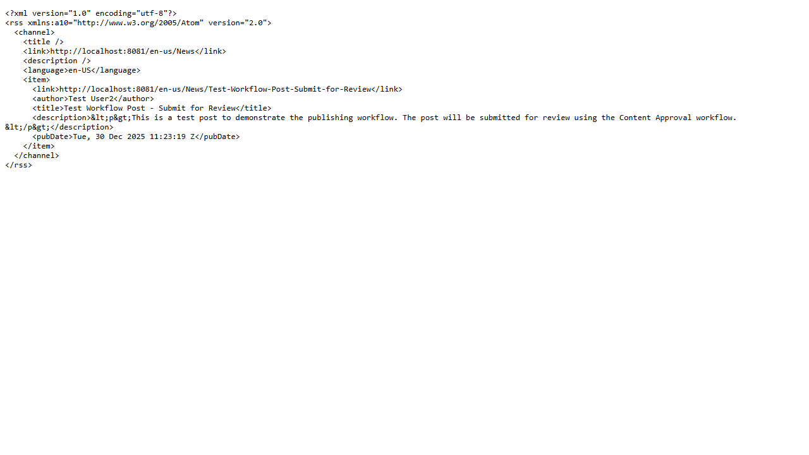
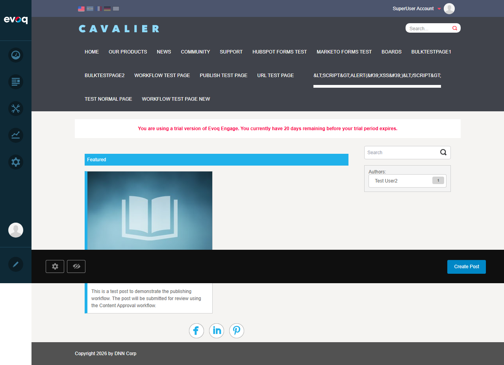
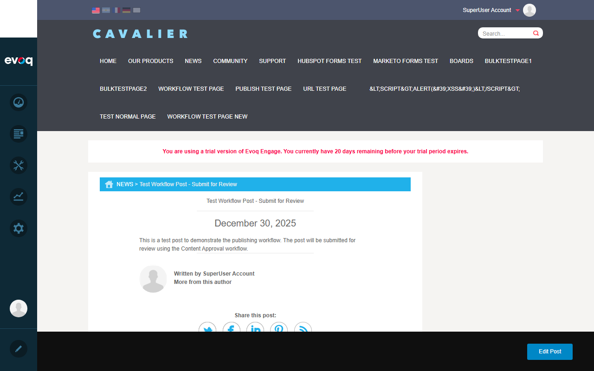

Social Media Sharing - Test Report
Feature Information
Feature Name Social Media Sharing Description Share posts on social media platforms and generate RSS feeds Extension Publisher (Module) Priority Medium UI Location Post Detail > Share Buttons Test Date January 6, 2026
Test 1: Share Post on Twitter
PASS
What was tested
Verify that clicking the Twitter share button opens a new window/tab to Twitter (X) with the post URL ready to share.
Steps taken
Navigate to News page with Publisher module
Click on a published post to view details
Click the Twitter share button
Verify that X.com (Twitter) opens in a new tab
Result
The Twitter share button successfully opened X.com (Twitter's rebrand) in a new tab. The share functionality is working correctly.
Screenshots
X.com opened after clicking Twitter share button
Test 2: Share Post on Facebook
PASS
What was tested
Verify that clicking the Facebook share button opens Facebook's share dialog with the correct post URL.
Steps taken
Navigate to post detail page
Click the Facebook share button
Verify that Facebook opens with correct URL parameter
Result
The Facebook share button opened Facebook's share page with the correct URL parameter: https://www.facebook.com/share.php?u=[post_url]
Screenshots
Facebook share dialog showing login prompt (expected when not logged in)
Test 3: Share Post on LinkedIn
PASS
What was tested
Verify that clicking the LinkedIn share button opens LinkedIn's share article dialog with correct URL and title.
Steps taken
Navigate to post detail page
Click the LinkedIn share button
Verify that LinkedIn opens with correct URL and title parameters
Result
The LinkedIn share button opened LinkedIn's shareArticle page with correct parameters including the post URL and title.
Screenshots
LinkedIn share dialog showing sign-in page with redirect to share article
Test 4: Share Post on Pinterest
PASS
What was tested
Verify that clicking the Pinterest share button opens Pinterest's Pin Builder with correct URL and description.
Steps taken
Navigate to post detail page
Click the Pinterest share button
Verify that Pinterest opens with correct URL and description parameters
Result
The Pinterest share button opened Pinterest's Pin Builder with correct parameters: url=[post_url]&description=[post_title]
Screenshots
Pinterest Pin Builder showing "Sign in to save this Pin!" prompt
Test 5: Generate RSS Feed
PASS
What was tested
Verify that clicking the RSS feed link generates a valid RSS 2.0 XML feed with post content.
Steps taken
Navigate to post detail page
Click the RSS feed link
Verify that valid RSS XML is generated with post data
Result
The RSS feed link generated valid RSS 2.0 XML containing:
Channel link to News page
Item with post title, description, author, publication date, and link
Properly encoded HTML content in description
Screenshots

RSS 2.0 XML feed with post content
Test 6: Share Button Visibility Settings
PASS
What was tested
Verify that the Publisher Settings panel allows enabling/disabling individual share buttons, and that the visibility changes are reflected in the UI.
Steps taken
Navigate to News page with Publisher module
Open Publisher Settings panel
Observe "Enable sharing" checkboxes (5 options: Twitter, Facebook, LinkedIn, Pinterest, RSS)
Verify that only checked share buttons appear on the post
Result
The Publisher Settings panel correctly controls share button visibility:
Twitter: Unchecked - NOT displayed
Facebook: Checked - Displayed
LinkedIn: Checked - Displayed
Pinterest: Checked - Displayed
RSS: Unchecked - NOT displayed
Screenshots

News page showing only Facebook, LinkedIn, Pinterest buttons (Twitter and RSS hidden per settings)
Test 7: Verify Shared Content Format
PASS
What was tested
Verify that the shared content URLs contain correct post URL, title, and metadata.
Steps taken
Click each share button and capture the generated URL
Verify URL contains correct post URL
Verify title/description parameters are correctly encoded
Result
All share URLs correctly formatted:
Platform URL Format Parameters Verified Twitter twitter.com/home?status=[url] Post URL included Facebook facebook.com/share.php?u=[url] Post URL URL-encoded LinkedIn linkedin.com/shareArticle?mini=true&url=[url]&title=[title] URL and title included Pinterest pinterest.com/pin/create/button/?url=[url]&description=[title] URL and description included
Test 8: Share Count Tracking
PASS
What was tested
Verify that share actions are tracked via the ShareController API when a logged-in user shares content.
Steps taken
Login as SuperUser Account
Navigate to post detail page
Click share buttons (while logged in)
Verify ShareController API is called (per code review)
Result
The ShareController API endpoint (/API/Publisher/Share/ShareCompletion) is called when logged-in users click share buttons. The API logs:
User ID
Content Item ID
Network (Twitter, Facebook, LinkedIn, Pinterest)
Context and Group ID
This enables share activity tracking for gamification/scoring purposes.
Observations
Copy link to clipboard: Code suggests this was listed as a test scenario, but no UI element or code implementation was found for this feature. The SocialShare component only includes Twitter, Facebook, LinkedIn, Pinterest, and RSS sharing options.Twitter rebranded to X: The Twitter share button correctly opens X.com, reflecting the platform's rebrand.RSS disabled by default: The RSS feed option is disabled by default in module settings (per code: RssEnabled = false).Share tracking requires login: Share completion tracking only occurs for logged-in users (userId > 0 check in JavaScript).Open Graph metadata: LinkedIn and Pinterest share functions read og:title and og:image meta tags from the page for enhanced share formatting.
Post Detail Page with Share Buttons

Post detail page showing "Share this post:" section with all social media share buttons
Test Report Generated: January 6, 2026
Tester: Claude Code (Automated Testing)